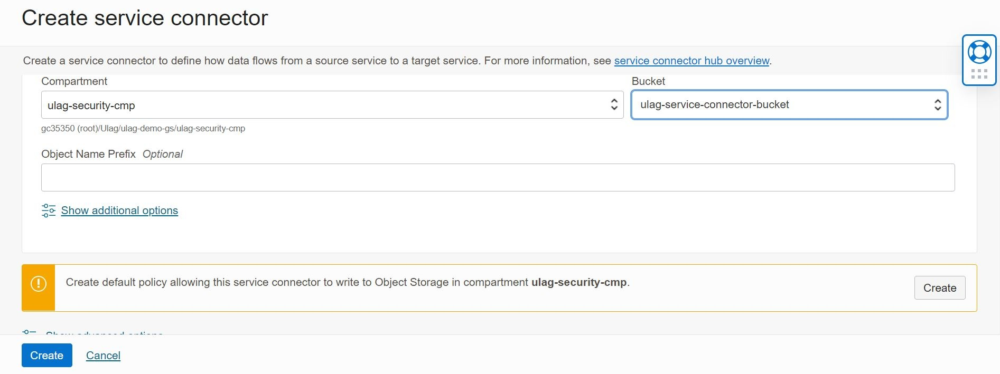
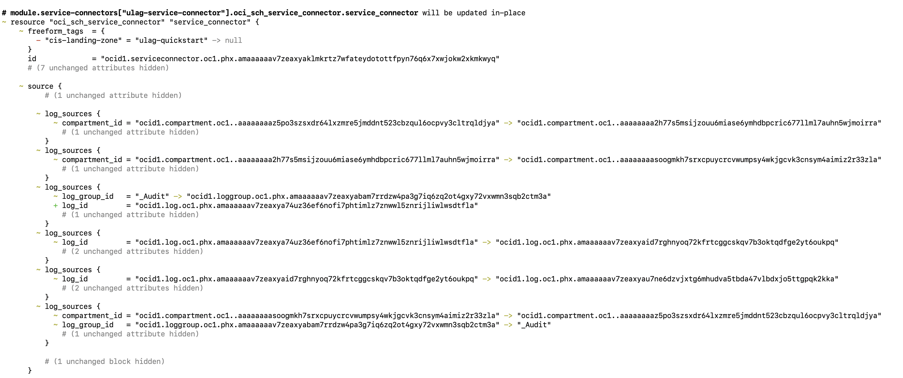
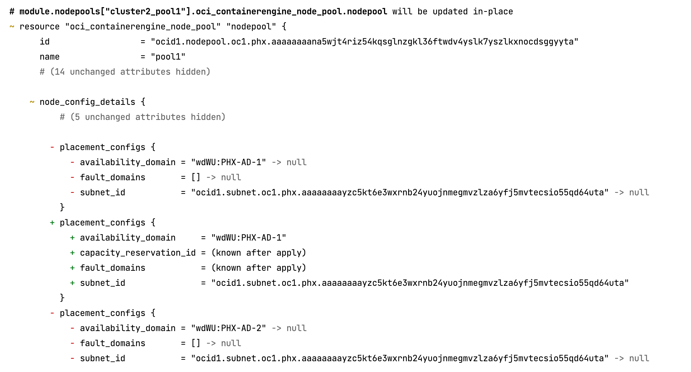
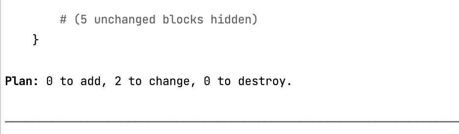

Tabs
Compartments Tab
Use this Tab to create compartments in the OCI tenancy. On choosing "Identity" in the SetUpOCI menu will allow to create compartments in the OCI tenancy.
Output terraform file generated at: <outdir>/<region>/<service_dir>/<prefix>_compartments.auto.tfvars where <region> directory is the home region.
Once terraform apply is done, you can view the resources under Identity -> Compartments in OCI console.
On re-running the same option you will find the previously existing files being backed up under directory <outdir>/<region>/<service_dir>/backup_compartments/<Date>-<Month>-<Time>.
Note
- If some compartment specified in excel was already existing in OCI then on Terraform Apply, the user will see logs which indicate creation of that compartment - this can be ignored as Terraform will only modify the existing Compartments (with additional information, if there are any eg description) and not create a new/duplicate one.
- Terraform destroy on compartments or removing the compartments details from *_compartments.auto.tfvars will not delete them from OCI Console by default. Inorder to destroy them from OCI either -
- Add an additional column - enable_delete to Compartments Tab of CD3 Excel sheet with the value "true" for the compartments that needs to be deleted on terraform destroy. Execute the toolkit menu option to Create Compartments. (OR)
- Add enable_delete = true parameter to each of the compartment that needs to be deleted in *_compartments.auto.tfvars
Groups Tab
Use this Tab to create groups and dynamic Groups in the OCI tenancy. On choosing "Identity" in the SetUpOCI menu will allow to create groups/dynamic groups in the OCI tenancy.
The toolkit supports groups in IDCS or default domain as of now.
Output terraform file generated at: <outdir>/<region>/<service_dir>/<prefix>_groups.auto.tfvars where <region> directory is the home region.
Once terraform apply is done, you can view the resources under Identity -> Groups in OCI console.
On re-running the same option you will find the previously existing files being backed up under directory → <outdir>/<region>/<service_dir>/backup_groups/<Date>-<Month>-<Time>.
Policies Tab
Use this Tab to create policies in the OCI tenancy. On choosing "Identity" in the SetUpOCI menu will allow to create policies in the OCI tenancy.
Output terraform files generated at: <outdir>/<region>/<service_dir>/<prefix>_policies.auto.tfvars where <region> directory is the home region.
Once terraform apply is done, you can view the resources under Identity -> Policies in OCI console.
On re-running the same option you will find the previously existing files being backed up under directory → <outdir>/<region>/<service_dir>/backup_policies/<Date>-<Month>-<Time>.
Users Tab
Use this Tab to create local users in the OCI tenancy. On choosing "Identity" in the SetUpOCI menu and "Add/Modify/Delete Users" submenu will allow to create users in the OCI tenancy.
The toolkit supports users in IDCS or default domain as of now.
Output terraform file generated: <outdir>/<region>/<service_dir>/<prefix>_users.auto.tfvars where <region> directory is the home region.
Once terraform apply is done, you can view the resources under Identity & Security -> Users in OCI console.
On re-running the same option you will find the previously existing files being backed up under directory → <outdir>/<region>/<service_dir>/backup_users/<Date>-<Month>-<Time>.
Network Sources Tab
Use this Tab to create Network Source in the OCI tenancy. On choosing "Identity" in the SetUpOCI menu and "Add/Modify/Delete Network Sources" submenu will allow to create Network Sources in the OCI tenancy.
Output terraform file generated: <outdir>/<region>/<service_dir>/<prefix>_networksources.auto.tfvars where <region> directory is the home region.
Once terraform apply is done, you can view the resources under Identity & Security -> Network Sources in OCI console.
On re-running the same option you will find the previously existing files being backed up under directory → <outdir>/<region>/<service_dir>/backup_networksources/<Date>-<Month>-<Time>.
Note - Network Source creation/updation is supported only in the home region.
Tags Tab
Use this Tab to create tags - Namespaces, Key-Value pairs, Default and Cost Tracking Tags. On choosing "Tags" in the SetUpOCI menu will allow to create Tags in the OCI tenancy.
Once this is complete you will find the generated output terraform files in below locations :
<outdir>/<region>/<service_dir>/<prefix>_tags-defaults.auto.tfvars
<outdir>/<region>/<service_dir>/<prefix>_tags-namespaces.auto.tfvars
<outdir>/<region>/<service_dir>/<prefix>_tags-keys.auto.tfvars
Once terraform apply is done, you can view the resources under Governance -> Tag Namespaces for the region.
On re-running the same option you will find the previously existing files being backed up under directory → <outdir>/<region>/<service_dir>/backup_Tagging/<Date>-<Month>-<Time>.
a. VCNs Tab
Note:
-
Mention value for column 'Hub/Spoke/Peer/None' in VCNs tab as None for utilising DRGv2 functionality (where DRG is directly attached to all VCNs and hub/spoke model is not required)
-
Declare the DRG for the VCN in 'DRG Required' column of VCNs tab and then declare the attachment in DRGs tab also. Toolkit verifies the declaration in VCNs tab and then creates the DRG while reading the DRGs tab.
b. DRGs Tab
Note:
- Only VCN and RPC attachments are supported via CD3 as of now for DRGv2. Create attachments for VC and IPSec via OCI console.
- Network export will also export only VCN and RPC attachments to CD3 excel sheet as of now.
- Create a Route Table for DRG which is not attached to any attachment by keeping 'Attached To' column in DRGs tab empty.
- Create an Import Route Distribution which is attached to some Route Table in DRG.
c. VCN Info tab
This is an important tab and contains general information about networking to be setup.
d. DHCP tab
This contains information about DHCP options to be created for each VCN.
e. SubnetsVLANs tab
Notes:
- Name of the VCNs, subnets etc are all case-sensitive. Specify the same names in all required places. Avoid trailing spaces for a resource Name.
- A subnet or a vlan will be created based on the column - 'Subnet or VLAN'. When VLAN is specified, vlan tag can also be specified with sytanx as VLAN::<vlan_tag>
- Column NSGs is read only for type VLAN.
- Columns - DHCP Option Name, Seclist Names, Add Default Seclist and DNS Label are applicable only for type Subnet.
- Default Route Rules created are :
a. Based on the values entered in columns ‘configure SGW route’, ‘configure NGW route’, ‘configure IGW route’, 'configure Onprem route' and 'configure VCNPeering route' in Subnets sheet; if the value entered is ‘y’, it will create a route for the object in that subnet eg if ‘configure IGW’ in Subnets sheet is ‘y’ then it will read parameter ‘igw_destination’ in VCN Info tab and create a rule in the subnet with destination object as IGW of the VCN and destination CIDR as value of igw_destnation field. If comma separated values are entered in the igw_destination in VCN Info tab then the tool creates route rule for each destination cidr for IGW in that subnet.Tool works similarly for ‘configure NGW’ in Subnets tab and ‘ngw_destination’ in VCN Info tab. For SGW, route rule is added either 'all services' or object storage in that region.
b. For a hub spoke model, tool automatically creates route tables attached with the DRG and each LPG in the hub VCN peered with spoke VCN. ‘onprem_destinations’ in VCN Info tab specifies the On Prem Network CIDRs.
- The below Default Security Rules are created:
a. Egress rule allowing all protocols for 0.0.0.0/0 is opened.
b. Ingress rule allowing all protocols for subnet CIDR is opened. This is to allow communication between VMs with in the same subnet.
-
Default Security List of the VCN is attached to the subnet if ‘add_default_seclist’ parameter in Subnets tab is set to ‘y’.
-
Components- IGW, NGW, DRG, SGW, LPGs and NSGs are created in same compartment as the VCN.
-
VCN names need to be unique for the same region. Automation ToolKit does not support duplicate values at the moment. However you can have same VCN names across different regions.
Output terraform files are generated under <outdir>/<region> directory.
Once terraform apply is done, you can view the resources under Networking -> Virtual Cloud Networks in OCI console.
Output files generated:
| File name | Description |
|---|---|
| <prefix>_major-objects.auto.tfvars | Contains TF for all VCNs and components- IGW, NGW, SGW, DRG, LPGs. |
| <prefix>_custom-dhcp.auto.tfvars | Contains TF for all DHCP options for all VCNs. |
<prefix>_routetables.auto.tfvars <prefix>_default-routetables.auto.tfvars <prefix>_drg-routetables.auto.tfvars <prefix>_drg-distributions.auto.tfvars <prefix>_drg-data.auto.tfvars |
Contains TF for route rules for each route table. |
<prefix>_seclists.auto.tfvars <prefix>_default-seclists.auto.tfvars |
Contains TF for security rules for each security list. |
| <prefix>_subnets.auto.tfvars | Contains TF for all subnets for all VCNs. |
| <prefix>_vlans.auto.tfvars | Contains TF for all VLANs for all VCNs. |
| <prefix>_default-dhcp.auto.tfvars | Contains TF for default DHCP options of each VCN in each region |
<prefix>_nsgs.auto.tfvars <prefix>_nsg-rules.auto.tfvars |
Contains TF for NSGs in each region |
f. Rules
After running Create Network, export the Security Rules, Route Rules, DRG Route Rules (using create_resources (Greenfield) Workflow) into the excel sheet and then modify the respective sheet to do any further modification to the rules.
g. NSGs
Use NSGs tab to add/modify/delete NSG rules and NSGs.
DNS-Views-Zones-Records-Tab
Below are the details about specific columns to fill the sheet for DNS-Views-Zones-Records-Tab
-
"Compartment Name"- Compartment name for the Views/Zones
-
"View Name"- Should be unique in a region
-
"Zone" - Zone Name under the specified view
-
"Domain" - Full domain name (including zone name)
-
"RType" - Select the RType from the list
-
"RDATA" - Provide multi values as supported by the specified RType, separated by newline. Click here to read more about RType and RDATA.
-
"Defined Tags" - Specify the defined tag key and its value in the format - <Namespace>.<TagKey>=<Value> else leave it empty. Multiple Tag Key , Values can be specified using semi-colon (;) as the delimeter. Example: Operations.CostCenter=01;Users.Name=user01
-
There must be only Single Row for Domain and RType combination
-
Rows are duplicated in case of multiple child resources
Output terraform files are generated under <outdir>/<region> directory.
Once terraform apply is done, you can view the resources under Networking -> DNS management in OCI console
Firewall Tabs
OCI Network Firewall can be created using CD3-Firewall-template.xlsx. After the required details are filled in, choose "OCI Firewall" under the SetUpOCI menu to create the Firewall and its policy.
It is recommended to execute the validator script for Firewall, to validate the input values before proceeding to create.
Once the toolkit execution is complete, output terraform files are generated at :
<outdir>/<region>/<service_dir>/<prefix>_firewall*.auto.tfvars
Once terraform apply is done, you can view the resources under Identity and Security -> Network Firewalls for the region.
DNS-Resolvers-Tab
Existing Resolvers need to be exported first before making any changes to those. Below are the details about specific columns to fill the sheet for DNS-Resolvers-Tab
-
"Compartment Name" - Compartment name for VCN
-
"Display Name" - Display Name is same as the VCN Name by default.
-
"Associated Private Views" - Format: <view_compartment>@<view_name>. Multiple views are seperated by newline in the same cell(\n is not supported).
-
"Endpoint Display Name" - Provide endpoint display name, new row need to be created for each endpoint in a resolver. Duplicate Names are not allowed for a single resolver.
-
"Endpoint Type:IP Address" - Format Type:IP, Type could be Forwarding or Listening. IP can be left as null if not predefined.
-
"Endpoint NSGs"- NSGs attached to the endpint.
-
"Rules" - Format: Type::Clients::Destination IP. Multiple rules are seperated by newline in the same cell(\n is not supported)(Rules are processed only for Forwarding Endpoints)
-
"Defined Tags" - Specify the defined tag key and its value in the format - <Namespace>.<TagKey>=<Value> else leave it empty. Multiple Tag Key , Values can be specified using semi colon (;) as the delimeter. Example: Operations.CostCenter=01;Users.Name=user01
-
Associated Private Views can be null/blank
Output terraform files are generated under <outdir>/<region> directory.
Once terraform apply is done, you can view the resources under Networking -> Virtual Cloud Network -> VCN Information in OCI console
DedicatedVMHosts Tab
Fill up the details in 'DedicatedVMHosts' sheet and follow the options below.
On choosing "Compute" in the SetUpOCI menu and "Add/Modify/Delete Dedicated VM Hosts" submenu will allow to launch your VM on a dedicated host.
Output terraform file generated: <outdir>/<region>/<service_dir>/<prefix>_dedicatedvmhosts.auto.tfvars.
Once terraform apply is done, you can view the resources under Compute -> Dedicated Virtual Machine Hosts for the region.
If you want to update or add new dedicated VM hosts, update the 'DedicatedVMHosts' tab in cd3 and rerun using setUpOCI.
On re-running the same option you will find the previously existing files being backed up under directory → <outdir>/<region>/<service_dir>/backup_dedicatedvmhosts/<Date>-<Month>-<Time>.
Instances Tab
CD3 Tab Specifications:
-
"Display Name" column is case sensitive. Specified value will be the display name of Instance in OCI console.
-
Optional columns can also be left blank - like Fault Domain, IP Address. They will take default values when left empty.
-
Leave columns: Backup Policy, NSGs, DedicatedVMHost blank if instance doesn't need to be part of any of these. Instances can be made a part of Backup Policy and NSGs later by choosing appropriate option in setUpOCI menu.
Note: The column "SSH Key Var Name" accepts SSH key value directly or the name of variable declared in variables.tf under the instance_ssh_keys variable containing the key value. Make sure to have an entry in variables_<region>.tf file with the name you enter in SSH Key Var Name field of the Excel sheet and put the value as SSH key value.
For Eg: If you enter the SSH Key Var Name as ssh_public_key, make an entry in variables_<region>.tf file as shown below:
variable 'instance_ssh_keys' {
type = map(any)
default = {
ssh_public_key = "<SSH PUB KEY STRING HERE>"
# Use '\n' as the delimiter to add multiple ssh keys.
# Example: ssh_public_key = "ssh-rsa AAXXX......yhdlo\nssh-rsa AAxxskj...edfwf"
#START_instance_ssh_keys#
# exported instance ssh keys
#instance_ssh_keys_END#
}
}
-
Enter subnet name column value as: <vcn-name>_<subnet-name>
-
Enter remote execute script(Ansible/Shell) name. Shell scripts should be named with *.sh and ansible with *.yaml or *.yml inside 'scripts' folder within the region/service dir. This feature is tested against OL8.
-
Create a column called 'Cloud Init Script' to execute scripts (located under 'scripts' folder within the region/service dir) as part of cloud-init.
-
Source Details column of the excel sheet accepts both image and boot volume as the source for instance to be launched. Format -
image::<variable containing ocid of image> or bootVolume::<variable containing ocid of boot volume>
Make sure to have an entry in variables_<region>.tf file for the value you enter in Source Details field of the Excel sheet. Ex: If you enter the Source Details as image::Linux, make an entry in variables_<region>.tf file under the instance_source_ocids variable as shown below:
variable 'instance_source_ocids' {
type = map(any)
Linux = "<LATEST LINUX OCID HERE>"
Windows = "<LATEST WINDOWS OCID HERE>"
PaloAlto = "Palo Alto Networks VM-Series Next Generation Firewall"
#START_instance_source_ocids#
# exported instance image ocids
#instance_source_ocids_END#
}
- Mention shape to be used in Shape column of the excel sheet. If Flex shape is to be used format is:
shape::ocpus
eg: VM.Standard.E3.Flex::5
-
Custom Policy Compartment Name : Specify the compartment name where the Custom Policy is created.
-
While export of instances, it will fetch details for only the primary VNIC attached to the instance
On choosing "Compute" in the SetUpOCI menu and "Add/Modify/Delete Instances/Boot Backup Policy" submenu will allow to launch your VM on OCI tenancy.
Output terraform file generated: <outdir>/<region>/<service_dir>/<prefix>_instances.auto.tfvars and <outdir>/<region>/<service_dir>/<prefix>_boot-backup-policy.auto.tfvars under appropriate <region> directory.
Once the terraform apply is complete, view the resources under Compute -> Instances for the region.
On re-running the same option you will find the previously existing files being backed up under directory → <outdir>/<region>/<service_dir>/backup_instances/<Date>-<Month>-<Time>.
BlockVolumes Tab
This tab in cd3 excel sheet is used when you need to create block volumes and attach the same to the instances in the OCI tenancy.
Automation Tool Kit does not support sharing of volumes at the moment. While export of block volumes, if the block volume is attached to multiple instances, it will just fetch details about one attachment.
On choosing "Storage" in the SetUpOCI menu and "Add/Modify/Delete Block Volumes/Block Backup Policy" submenu will allow to create block volumes in OCI Tenancy.
On completion of execution, you will be able to find the output terraform file generated at :
<outdir>/<region>/<service_dir>/<prefix>_blockvolumes.auto.tfvars
<outdir>/<region>/<service_dir>/<prefix>_block-backup-policy.auto.tfvars under appropriate <region> directory.
Once terraform apply is done, you can view the resources under Block Storage -> Block Volumes in OCI console.
On re-running the option to create Block Volumes you will find the previously existing files being backed up under directory:
<outdir>/<region>/<service_dir>/backup_blockvolumes/<Date>-<Month>-<Time> and <outdir>/<region>/<service_dir>/backup_BlockBackupPolicy/<Date>-<Month>-<Time>.
FSS Tab
On choosing "Storage" in the SetUpOCI menu and "Add/Modify/Delete File Systems" submenu will allow to create file system storage on OCI tenancy.
Note: Freeform and Defined Tags - If specified, applies to FSS object only and not to other components like Mount Target.
Once this is complete you will find the generated output terraform files in location :
<outdir>/<region>/<service_dir>/<prefix>_fss.auto.tfvars
Once terraform apply is done, you can view the resources under File Storage → File Systems for the region.
On re-running the same option you will find the previously existing files being backed up under directory → <outdir>/<region>/<service_dir>/backup_FSS/<Date>-<Month>-<Time>.
Load Balancers
Automation Tool Kit allows you to create Load Balancers. Components that you can create using the Tool Kit includes:
| Resource | Tab Name |
|---|---|
| Load Balancers Hostnames Cipher Suites Certificates |
LB-Hostname-Certs |
| Backend Sets and Backend Servers | BackendSet-BackendServer |
| Rule Set | RuleSet |
| Path Route Set | PathRouteSet |
| Listeners | LB-Listeners |
NOTE : While exporting and synching the tfstate file for LBR objects, the user may be notified that a few components will be modified on apply. In such scenarios, add the attributes that the Terraform notifies to be changed to the appropriate CD3 Tab of Load Balancer and Jinja2 Templates (as a non-default attribute) and re-run the export.
On choosing "Load Balancers" in the SetUpOCI menu will allow to create load balancers in OCI tenancy.
Load Balancers, Hostnames , Certificates and Cipher Suites:
Use the tab LB-Hostname-Certs of CD3 Excel to create the following components of Load Balancer:
Load Balancers Hostnames Cipher Suites Certificates
Certificates, Hostnames and Cipher Suites are optional. Leave the related columns empty if they are not required.
LB-Hostname-Certs Tab
Once this is complete you will find the generated output terraform files in location :
<outdir>/<region>/<service_dir>/<prefix>_lb-hostname-certs.auto.tfvars
Once terraform apply is done, you can view the resources under Networking → Load Balancers for the region.
On re-running the same option you will find the previously existing files being backed up under directory → <outdir>/<region>/<service_dir>/backup_LB-Hostname-Certs/<Date>-<Month>-<Time>.
LB-Backend Set and Backend Servers Tab
Use the tab LB-BackendSet-BackendServer of CD3 Excel to create the following components of Load Balancer:
- Backend Sets
- Backend Servers
Once this is complete you will find the generated output terraform files in location :
<outdir>/<region>/<service_dir>/<prefix>_backendset-backendserver.auto.tfvars
Once terraform apply is done, you can view the resources under Networking→Load Balancers for the region.
On re-running the same option you will find the previously existing files being backed up under directory → <outdir>/<region>/<service_dir>/backup_BackendSet-BackendServer/<Date>-<Month>-<Time>.
LB-RuleSet Tab
Use the tab LB-RuleSet of CD3 Excel to create the following components of Load Balancer:
- Rule Sets
- RuleSet
Once this is complete you will find the generated output terraform files in location :
<outdir>/<region>/<service_dir>/<prefix>_ruleset.auto.tfvars
Once terraform apply is done, you can view the resources under Networking→Load Balancers for the region.
On re-running the same option you will find the previously existing files being backed up under directory → <outdir>/<region>/<service_dir>/backup_RuleSet/<Date>-<Month>-<Time>.
LB-Path Route Set Tab
Use the tab LB-PathRouteSet of CD3 Excel to create the following components of Load Balancer:
- Path Route Sets
- PathRouteSet:
Once this is complete you will find the generated output terraform files in location :
<outdir>/<region>/<service_dir>/<prefix>_pathrouteset.auto.tfvars
Once terraform apply is done, you can view the resources under Networking→Load Balancers for the region.
On re-running the same option you will find the previously existing files being backed up under directory → <outdir>/<region>/<service_dir>/backup_PathRouteSet/<Date>-<Month>-<Time>.
LB-Listeners Tab
Use the tab LB-Listener of CD3 Excel to create the following components of Load Balancer:
- Path Route Sets
- LB-Listener:
Once this is complete you will find the generated output terraform files in location :
<outdir>/<region>/<service_dir>/<prefix>_lb-listener.auto.tfvars
Once terraform apply is done, you can view the resources under Networking→Load Balancers for the region.
On re-running the same option you will find the previously existing files being backed up under directory → <outdir>/<region>/<service_dir>/backup_LB-Listener/<Date>-<Month>-<Time>.
DBSystems-VM-BM Tab
This helps you to create DB Systems hosted on Virtual Machine and Bare Metal. This can be configured based on the shape chosen in the tab.
Note: The column "SSH Key Var Name" accepts SSH key value directly or the name of variable declared in variables.tf under the dbsystem_ssh_keys variable containing the key value. Make sure to have an entry in variables_<region>.tf file with the name you enter in SSH Key Var Name field of the Excel sheet and put the value as SSH key value.
For Eg: If you enter the SSH Key Var Name as ssh_public_key, make an entry in variables_<region>.tf file as shown below:
variable "dbsystem_ssh_keys" {
type = map(any)
default = {
ssh_public_key = "<SSH PUB KEY STRING HERE>"
# Use ',' as the delimiter to add multiple ssh keys.
# Example: ssh_public_key = ["ssh-rsa AAXXX......yhdlo","ssh-rsa AAxxskj...edfwf"]
#START_dbsystem_ssh_keys#
# exported dbsystem ssh keys
#dbsystem_ssh_keys_END#
}
}
On choosing "Database" in the SetUpOCI menu and "Add/Modify/Delete Virtual Machine or Bare Metal DB Systems" submenu will allow to create DB Systems hosted on Virtual Machine and Bare Metal.
Output terraform file generated:
<outdir>/<region>/<service_dir>/<prefix>_dbsystem-vm-bm.auto.tfvars under where <region> directory is the region specified for the DB System.
Once terraform apply is done, you can view the resources under Bare Metal, VM, and Exadata-> DB Systems in OCI console.
On re-running the same option you will find the previously existing files being backed up under directory → <outdir>/<region>/<service_dir>/backup_dbsystems-vm-bm/<Date>-<Month>-<Time>.
ExaCS
You can create ExaCS in OCI by utilizing Exa-Infra and Exa-VM Cluster tabs in CD3 excel sheet.
Note: The column "SSH Key Var Name" accepts SSH key value directly or the name of variable declared in variables.tf under the exacs_ssh_keys variable containing the key value. Make sure to have an entry in variables_<region>.tf file with the name you enter in SSH Key Var Name field of the Excel sheet and put the value as SSH key value.
For Eg: If you enter the SSH Key Var Name as ssh_public_key, make an entry in variables_<region>.tf file as shown below:
variable "exacs_ssh_keys" {
type = map(any)
default = {
ssh_public_key = "<SSH PUB KEY STRING HERE>"
# Use ',' as the delimiter to add multiple ssh keys.
# Example: ssh_public_key = ["ssh-rsa AAXXX......yhdlo","ssh-rsa AAxxskj...edfwf"]
#START_exacs_ssh_keys#
# exported exacs ssh keys
#exacs_ssh_keys_END#
}
}
On choosing "Database" in the SetUpOCI menu and "Add/Modify/Delete EXA Infra and EXA VM Clusters" submenu will allow to create ExaCS in OCI tenancy.
Output terraform file generated:
<outdir>/<region>/<service_dir>/<prefix>_exa-infra.auto.tfvars under where <region> directory is the region hosting the Exa Infra.
<outdir>/<region>/<service_dir>/<prefix>_exa-vmclusters.auto.tfvars under where <region> directory is the region hosting the Exa VM Clusters.
Once terraform apply is done, you can view the resources under Bare Metal, VM, and Exadata-> Exadata Infrastructure and Exadata VM Clusters in OCI console.
On re-running the same option you will find the previously existing files being backed up under directory → <outdir>/<region>/<service_dir>/backup_exa-infra/<Date>-<Month>-<Time>
and <outdir>/<region>/<service_dir>/backup_exa-vmclusters/<Date>-<Month>-<Time>
ADB Tab
Use this Tab to create Autonomous Database Warehouse or Autonomous Database Transaction Processing in the OCI tenancy.
On choosing "Database" in the SetUpOCI menu and "Add/Modify/Delete ADBs" submenu will allow to create Autonomous Database Warehouse or Autonomous Database Transaction Processing in the OCI tenancy.
Output terraform file generated: <outdir>/<region>/<service_dir>/<prefix>_adb.auto.tfvars where <region> directory is the region hosting the respective ADB.
Once terraform apply is done, you can view the resources under Oracle Database -> Autonomous Database in OCI console.
On re-running the same option you will find the previously existing files being backed up under directory → <outdir>/<region>/<service_dir>/backup_adb/<Date>-<Month>-<Time>
NOTE -
- Currently toolkit supports ADB creation in Shared Infra only,
Notifications Tab
On choosing "Management Services" in the SetUpOCI menu and "Add/Modify/Delete Notification" and "Add/Modify/Delete Events" submenu will allow to manage events and notifications in OCI tenancy.
Output terraform file generated: *<outdir>/<region>/<customer_name>_notifications.auto.tfvarsand *<outdir\>/<region\>/<customer_name>_events.auto.tfvars
Once the terraform apply is complete, view the resources under Application Integration-> Notifications & Application Integration-> Events for the region in OCI Console.
Further, on re-running the same option you will find the previously existing files being backed up under directory → <outdir>/<region>/<service_dir>/backup_events/<Date>-<Month>-<Time> or <outdir>/<region>/<service_dir>/backup_notifications/<Date>-<Month>-<Time>
Note:
- Notifications can not be configured for a particular resource OCID at the moment.
- Export of Notifications supports ONS and FAAS(will put OCID for the function in the CD3). It will skip the event export if action type is OSS.
Alarms Tab
Use CD3-ManagementServices-template.xlsx under example folder of GIT as input file for creating/exporting Alarms.
On choosing "Management Services" in the SetUpOCI menu and "Add/Modify/Delete Alarms" submenu will allow to manage alarms in OCI tenancy.
Output terraform file generated: *<outdir>/<region>/<customer_name>_alarms.auto.tfvars```
Once the terraform apply is complete, view the resources under Observability & Management→ Monitoring → Alarms Definition for the region in OCI Console.
Further, on re-running the same option you will find the previously existing files being backed up under directory → <outdir>/<region>/<service_dir>/backup_alarms/<Date>-<Month>-<Time>
ServiceConnectors Tab
Use CD3-ManagementServices-template.xlsx under example folder of GIT as input file for creating/exporting Service connectors.
The service connector resources provisioning can be initiated by updating the corresponding excel sheet tab.
CIS LZ recommends to create SCH to collect audit logs for all compartments, VCN Flow Logs and Object Storage Logs and send to a particular target that can be read by SIEM. CD3 SCH automation is aligned with CIZ LZ and allow the user to deploy/provision the recommended approach by filling in the suitable data in excel sheet.
Output terraform file generated: *<outdir>/<region>/<customer_name>_serviceconnectors.auto.tfvars```
Once the terraform apply is complete, view the resources under service connectors window for the region in OCI Console.
Further, on re-running the same option you will find the previously existing files being backed up under directory → <outdir>/<region>/<service_dir>/backup_serviceconnectors/<Date>-<Month>-<Time>
Note -
- The service connector resources created via automation will not have the corresponding IAM policies between source and destination entities. It has to be created separately.
- The user will get an option to create the IAM policy when you click on Edit for the respective service connector provisioned through terraform like in below screenshot:

-
Also, When the target kind is 'notifications' the value for formatted messages parameter is set to 'true' as default. Its set to 'false' only when the source is 'streaming'.
-
After executing tf_import_commands during export of service connectors, the terraform plan will show log-sources ordering as changes and it rearranges the order for log-sources for that service connector if source/target kind is logging. This can be ignored and you can proceed with terraform apply.

OKE Tab
Use this tab to create OKE components in OCI.
Note: The column "SSH Key Var Name" accepts SSH key value directly or the name of variable declared in variables.tf under the oke_ssh_keys variable containing the key value. Make sure to have an entry in variables_<region>.tf file with the name you enter in SSH Key Var Name field of the Excel sheet and put the value as SSH key value.
For Eg: If you enter the SSH Key Var Name as ssh_public_key, make an entry in variables_<region>.tf file as shown below:
variable "oke_ssh_keys" {
type = map(any)
default = {
ssh_public_key = "<SSH PUB KEY STRING HERE>"
# Use '\n' as the delimiter to add multiple ssh keys.
# Example: ssh_public_key = "ssh-rsa AAXXX......yhdlo\nssh-rsa AAxxskj...edfwf"
#START_oke_ssh_keys#
#oke_ssh_keys_END#
}
}
- For source details column, the format should be as below
image::<variable containing ocid of image>
Make sure to have an entry in variables_<region>.tf file for the value you enter in Source Details field of the Excel sheet.
Eg: If you enter the Source Details as image::Linux, make an entry in variables_<region>.tf file under the oke_source_ocids variable as shown below:
variable "oke_source_ocids" {
type = map(any)
default = {
Linux = "<OKE LINUX OCID HERE>"
#START_oke_source_ocids#
# exported oke image ocids
#oke_source_ocids_END#
}
}
On choosing "Developer Services" in the SetUpOCI menu and "Add/Modify/Delete OKE Cluster and Nodepools" submenu will allow to manage oke components in OCI tenancy.
On completion of execution, you will be able to find the output terraform file generated at :
<outdir>/<region>/<service_dir>/<prefix>_oke_clusters.auto.tfvars
<outdir>/<region>/<service_dir>/<prefix>_oke_nodepools.auto.tfvars
Once terraform apply is done, you can view the resources under Developer Services -> Kubernetes Clusters (OKE) for the region in OCI console.
On re-running the option to create oke clusters and noodepools you will find the previously existing files being backed up under directory:
<outdir>/<region>/<service_dir>/backup_oke/<Date>-<Month>-<Time>.
Notes:
- Current version of the toolkit support only single availability domain placement for the nodepool. So if a cluster is exported with nodepools having multiple placement configuration, the terraform plan will show changes similar to:


To avoid this, an ignore statement as shown below is added to ignore any changes to the placement configuration in nodepool.
ignore_changes = [node_config_details[0].placement_configs,kubernetes_version, defined_tags["Oracle-Tags.CreatedOn"], defined_tags["Oracle-Tags.CreatedBy"],node_config_details[0].defined_tags["Oracle-Tags.CreatedOn"],node_config_details[0].defined_tags["Oracle-Tags.CreatedBy"]]
Known Observed behaviours:
- It has been observed that the order of kubernetes labels change randomly during an export. In such situations a terraform plan detects it as a change to the kubernetes labels.
VCN FLow Logs
This will enable Flow logs for all the subnets mentioned in 'SubnetsVLANs' tab of CD3 Excel sheet. Log group for each VCN is created under the same compartment as specified for VCN and all subnets are added as logs to this log group.
Below TF file is created:
| File name | Description |
|---|---|
| <customer_name>_vcnflow-logging.auto.tfvars | TF variables file containing log group for each VCN and logs for eachsubnet in that VCN. |
LBaaS Logs
This will enable LBaaS logs for all the LBs mentioned in 'LB-Hostname-Certs' tab of CD3 Excel sheet. Log group for each LBaaS is created under the same compartment as specified for LBaaS and access and error log types are added as logs to this log group.
Below TF file is created:
| File name | Description |
|---|---|
| <customer_name>_load-balancers-logging.auto.tfvars | TF variables file containing log group for each LBaaS and its error and access logs. |
OSS Logs
This will enable OSS Bucket logs for all the buckets mentioned in 'Buckets' tab of CD3 Excel sheet. Log group for each bucket is created under the same compartment as specified for bucket and read and write log type is added as logs to this log group.
Below TF file is created:
| File name | Description |
|---|---|
| <customer_name>_buckets-logging.auto.tfvars | TF variables file containing log group for each bucket and its write logs. |
FSS Logs
This will enable logs for all the File systems mentioned in 'FSS' tab of CD3 Excel sheet. Log group for each File system is created under the same compartment as specified for FSS and its logs are added to the log group.
Below TF file is created:
| File name | Description |
|---|---|
| <customer_name>_nfs-logging.auto.tfvars | TF variables file containing log group for each File system and its logs. |
Firewall Logs
This will enable logs for the Firewalls specified in "Firewall" sheet of the Firewall template.. Log group for each Firewall is created under the same compartment as specified for Firewall and its logs are added to the log group.
Below TF file is created:
| File name | Description |
|---|---|
| <customer_name>_fw-logging.auto.tfvars | TF variables file containing log group for each Firewall and its logs. |
SDDCs Tab
Use this tab to create OCVS in your tenancy.
Note: As of now the toolkit supports single cluster SDDC. The column "SSH Key Var Name" accepts SSH key value directly or the name of variable declared in variables.tf under the sddc_ssh_keys variable containing the key value. Make sure to have an entry in variables_<region>.tf file with the name you enter in SSH Key Var Name field of the Excel sheet and put the value as SSH key value.
For Eg: If you enter the SSH Key Var Name as ssh_public_key, make an entry in variables_<region>.tf file as shown below:
variable "sddc_ssh_keys" {
type = map(any)
default = {
ssh_public_key = "<SSH PUB KEY STRING HERE>"
# Use '\n' as the delimiter to add multiple ssh keys.
# Example: ssh_public_key = "ssh-rsa AAXXX......yhdlo\nssh-rsa AAxxskj...edfwf"
#START_sddc_ssh_keys#
#sddc_ssh_keys_END#
}
}
Management and Workload Datastore volumes must be existing or created separately as part of BlockVolumes Tab. All the Network related information for SDDCs will be provided in SDDCs-Network , where the vlan should be created in SubnetsVLANs
On choosing "Software-Defined Data Centers - OCVS" in setUpOCI menu, the toolkit will read SDDCs tab and SDDCs-Network tab. The output terraform files will be generated at :
<outdir>/<region>/<service_dir>/<prefix>_sddcs.auto.tfvars under appropriate <region> directory.
Once terraform apply is done, you can view the resources under Hybrid -> Software-Defined Data Centers in OCI console.
On re-running the option to create OCVS you will find the previously existing files being backed up under directory:
<outdir>/<region>/<service_dir>/backup_sddcs/<Date>-<Month>-<Time>.
Buckets Tab
This tab in cd3 excel sheet is used when you need to create Object storage buckets in the OCI tenancy.
On choosing "Storage" in the SetUpOCI menu and "Add/Modify/Delete Buckets" submenu will allow to create buckets in OCI Tenancy.
On completion of execution, you will be able to find the output terraform file generated at :
<outdir>/<region>/<service_dir>/<prefix>_buckets.auto.tfvars
Once terraform apply is done, you can view the resources under Object Storage -> Buckets in OCI console.
On re-running the option to create Buckets you will find the previously existing files being backed up under directory:
<outdir>/<region>/<service_dir>/backup_buckets/<Date>-<Month>-<Time>.
NOTE: Currently the creation of buckets with indefinite retention rule is not supported, only export is supported.
CD3 Tab specifications:
- The Region, Compartment Name and Bucket Name fields are mandatory.
- Storage Tier: Once created, this cannot be modified unless you delete and re-create the bucket.
- Object Versioning: Once enabled, this can only be suspended and cannot be disabled while modifying.
-
Retention Rule: To enable retention rule:
4.1. The versioning should be disabled.
4.2. Specify the value in the format
RuleName::TimeAmount::TimeUnit::Retention Rule Lock Enabled.Multiple rules are seperated by newline in the same cell (\n is not supported).4.3. Retention Rule Lock Enabled: The time format of the lock should be as per RFC standards. Ex:
YYYY-MM-DDThh:mm:ssZ(provide the value only if you want to have the time rule locked enabled).4.4. TimeAmount: It should be number of Days/Years. Maximun value is 500.
4.5. TimeUnit: It should be either in DAYS and YEARS.
-
Replication Policy: To enable replication policy:
5.1. There should be a policy in place to allow region object storage service to manage objects for the bucket.
5.2 The destination bucket should be already created in the tenancy and cannot have versioning enabled.
5.2. The destination bucket cannot have retention rules.
5.3. The format should be PolicyName::DestinationRegion::DestinationBucketName.
-
Lifecycle Policy Name: Name of the lifecycle policy. Multiple rules can be mentioned in new rows keeping all other details same.
-
Lifecycle Target and Action: For Multipart-uploads, Object filters are not required and Rule Period can only be in Days.
NOTE: If you have Auto-tiering mode set to Enabled, you cannot create a object lifecycle policy rule with the action set as Infrequent Access.
-
Lifecycle Rule Period: Its a combination of TimeAmount (It should be number of Days/Years) and TimeUnit (It should be either in DAYS and YEARS). The format should be TimeAmount::TimeUnit
-
Lifecyle Exclusion Patterns/Lifecycle Inclusion Patterns/Lifecycle Inclusion Prefixes: Add the object name filter patterns here.
Budgets Tab
The Budgets tab in CD3 Excel sheet can be used to create OCI Budgets and Budget Alert rules.
Upon executing setUpOCI.py, choose "Cost Management" from the main menu and "Budgets" from its sub-options to create Budgets/Budget Alert Rules in OCI Tenancy.
On completion of execution, you will be able to find the output terraform file generated at :
<outdir>/<region>/<service_dir>/<prefix>_budgets.auto.tfvars
Once terraform apply is done, you can view the resources under Billing & Cost Management -> Cost Management -> Budgets in OCI console.
On re-running the option to create Budgets, you will find the previously existing files being backed up under directory:
<outdir>/<region>/<service_dir>/backup_budgets/<Date>-<Month>-<Time>.
Quotas Tab
The Quotas tab in CD3 Excel sheet can be used to create OCI Quota policies.
Upon executing setUpOCI.py, choose "Governance" from the main menu and "Quotas" from its sub-options to create Quota policies in OCI Tenancy.
On completion of execution, you will be able to find the output terraform file generated at :
<outdir>/<region>/<service_dir>/<prefix>_quotas.auto.tfvars
Once terraform apply is done, you can view the resources under Governance & Administration -> Tenancy Managememt -> Quota Policies in OCI console.
On re-running the option to create Quotas, you will find the previously existing files being backed up under directory:
<outdir>/<region>/<service_dir>/backup_quotas/<Date>-<Month>-<Time>.
KMS Tab
The KMS tab in CD3 Excel sheet can be used to create OCI Vaults and Keys in the OCI tenancy.
Upon executing setUpOCI.py, choose "Security" from the main menu and "Add/Modify/Delete KMS (Keys/Vaults)" from its sub-options to create Keys/Vaults in OCI Tenancy.
On completion of execution, you will be able to find the output terraform file generated at :
<outdir>/<region>/<service_dir>/<prefix>_kms.auto.tfvars
Once terraform apply is done, you can view the resources under Identity & Security -> Key Management & Secret Management in OCI console.
On re-running the option to create KMS, you will find the previously existing files being backed up under directory:
<outdir>/<region>/<service_dir>/backup_kms/<Date>-<Month>-<Time>.
Toolkit currently supports:
-
Creation of DEFAULT or VIRTUAL PRIVATE vaults.
-
Replication of Virtual Private Vaults across regions.
Important
Check point no: 9 in Known issues for OCI Vault Replication resource terraform import behaviour.
-
Creation of Master Encryption Keys (MEKs) for all the OCI supported Key shapes: AES, RSA and ECDSA.
-
Enabling Auto Rotation for the MEKs in Virtual Private Vaults.
Toolkit currently doesn't support:
-
Dedicated Key Management
-
External Key Management
-
Private endpoints
-
Secrets
Cloud Guard
There is currently no tab for cloud guard in the CD3 excel sheet.
Upon executing setUpOCI.py, choose "Security" from the main menu and "Enable Cloud Guard" from its sub-options will enable Cloud Guard for the tenancy from specified reporting region, clones the Oracle Managed detector and responder recipes. Creates a target for root compartment with the cloned recipes.
Below TF file is created:
| File name | Description |
|---|---|
| cis-cloudguard.auto.tf | vars TF variables file for enabling cloud guard and creating target for root compartment. |
Click here to view sample auto.tfvars for Security components